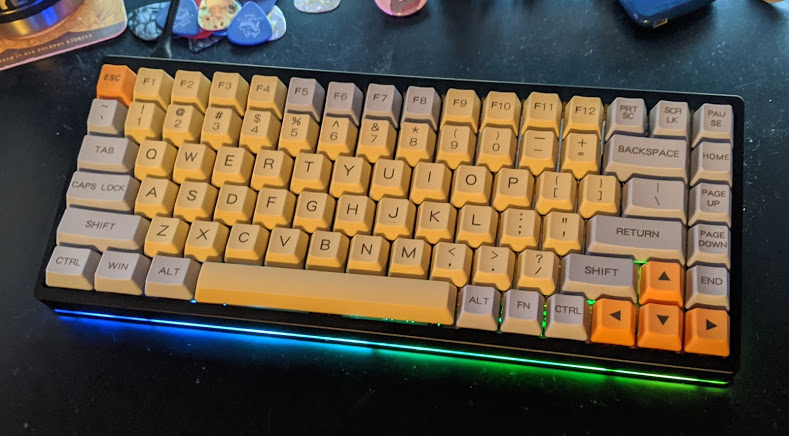
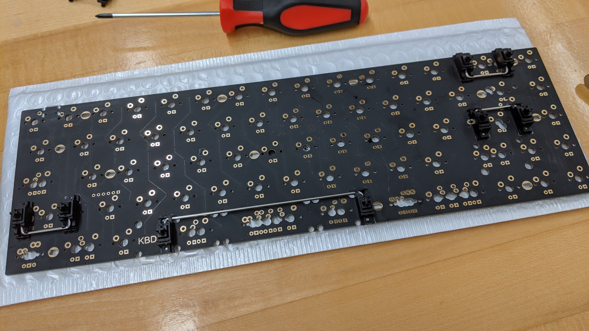
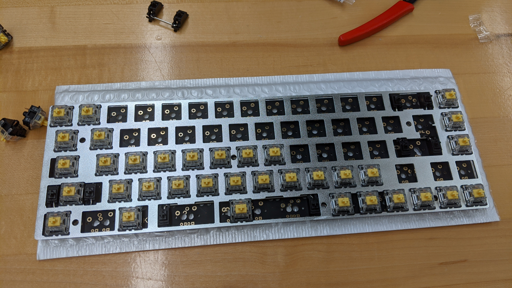
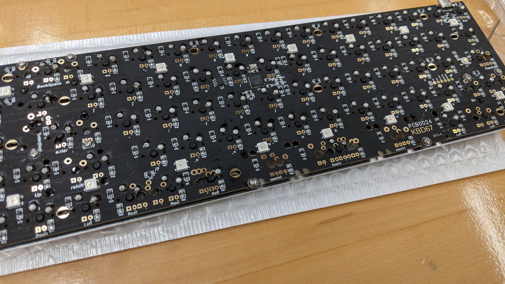
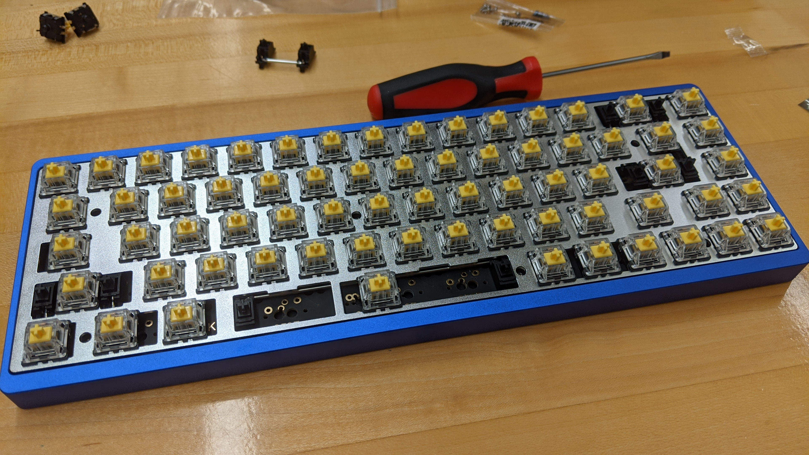
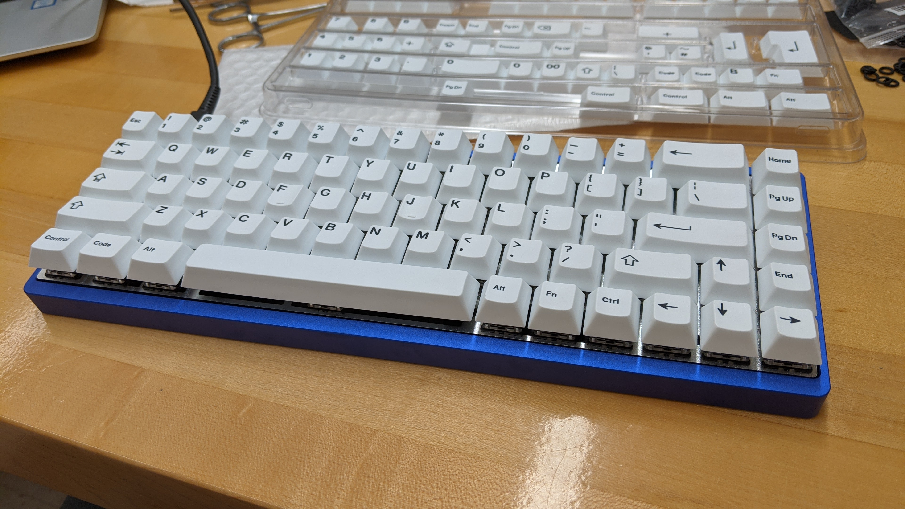

Building my second custom keyboard
What I learned from my previous build
After spending some time with my first custom build, I had learned quite a bit about what I wanted from a keyboard. Although I like my first board a lot, there were definitely some things I improved on in my second build.
Above is my first build, below are some of the problems with it
- The bulky case had a lot of empty space which lead to undesirable echoes when typing.
- The force required to press a key was too low, I frequently accidentally hit keys while resting my fingers on them.
- According to many, the switches I used were some of the worst feeling switches out there.
What I decided on for my second build
My main goal was to make something that was quieter, because I felt bad for my roommate if I was typing late. I also wanted to improve the feel of the switches and decrease the amount of times I accidentally hit keys while resting. Finally, I wanted something smaller, because I decided it would be pretty easy to get used to have F1-F12 under a function layer on the number row.
The first step to any keyboard build, stabilizers
The first part of assembling a keyboard is to install the stabilizers on the PCB. Stabilizers are the little fake switches that sit on the end of the longer keys, such as space, left-shift, caps-lock, and backspace. Stabilizers ensure that these keys don't frequently bind by making sure pressure is applied to to the switch regardless of where the user presses the switch.
Installing switches into the plate
Next, taking the plate (in this image it's the silvery aluminum part) and snapping the switches into place, making sure the pins on the bottom align with the holes on the PCB.
Soldering the switches to the board
Once all the switches have been snapped in, and the pins are poking out of the back of the PCB, it's time to solder. These joints aren't very hard to mess up, just push a lot of solder onto the pad after heating the pin and pad up with iron for a second or two.
Installing the assembled board into a case
The board is now ready to be dropped into the case, which for this build I decided I wanted to have a blue anodized finish because I thought it would look good with my white key-caps. I also picked up "keyboard foam" for the first time, which is just filler foam that is cut to fit inside the case under the PCB. This is supposed to help reduce the amount of empty space in the case which reduces that echo-y sound I hated from my first build.
The last (and probably most satisfying) part of any keyboard build
Last is the installation of the key-caps, which is very straight-forward. The key-caps slide onto the switches fairly easily. I also opted to install o-rings on the stem of each key in order to soften the bottom-out and lessen the noise.
My thoughts on this build
Overall, I am very satisfied with this build. It's 65% form-factor, and I stuck it in a low-profile case so it is a nice size decrease from my first build. The gateron yellow switches that I decided to use feel great, they are much smoother than the gateron browns I used in my first build. I wasn't sure how I would feel about white keys, but I think they look great in the blue case. I wrote this article with it, so it can't be too bad.